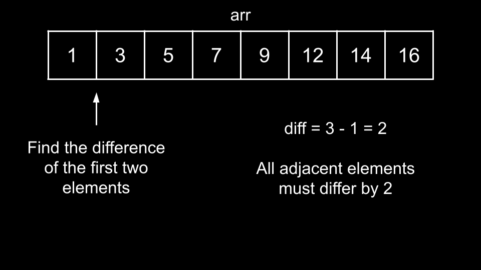
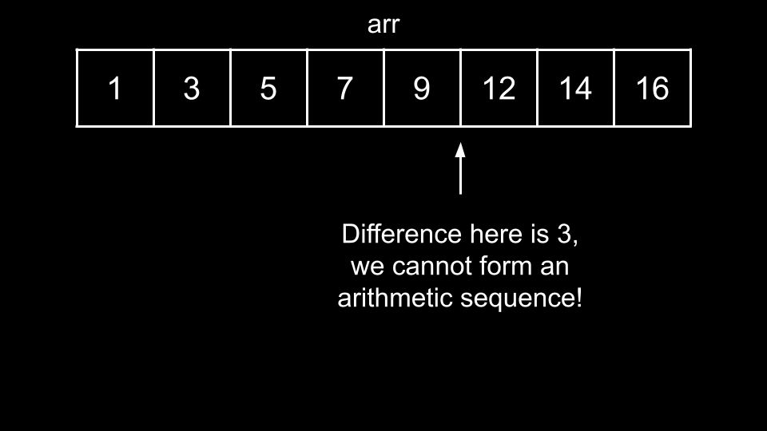
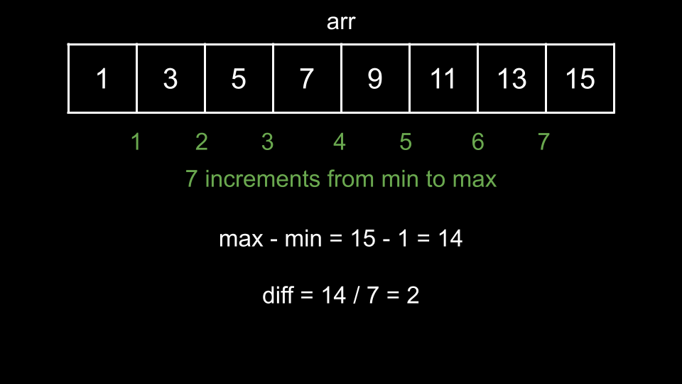

Intuition
The first thing to notice is that any arithmetic sequence must be sorted. This is because each successive element differs by a constant amount, so the entire sequence must be monotone since the change is constant.
For a given subarray arr, how do we check if we can form an arithmetic sequence? The problem states that
we are allowed to rearrange arr. Thus, we should start by sorting arr, since if we can
form an arithmetic sequence, the sequence must be sorted.
Once we have sorted arr, we can simply iterate over each adjacent element and check if the differences
are constant. We will initialize diff = arr[1] - arr[0] as the difference between the first two
elements.

We will then iterate over all other adjacent elements and check if their difference is equal to diff. If
any difference is not equal to diff, then we cannot form an arithmetic sequence.

If all differences are equal to diff, then we can form an arithmetic sequence. This brings us to our
solution. We will define a function check(arr) that takes a subarray arr and applies the
above process to determine if it is an arithmetic sequence.
Then, we will iterate over all pairs l[i], r[i] and form arr as the subarray of
nums from l[i] r[i]. Once we have arr, we will pass it into
check to find the answer for the ithi^{th}
query.
Algorithm
check(arr):
arr.diff = arr[1] - arr[0].i over the indices of arr, starting from 2:
arr[i] - arr[i - 1] != diff, return false.true.ans.i over the indices of l:
arr as the subarray of nums from indices l[i] to r[i].
check(arr) to ans.ans.Implementation
Java
class Solution {
public Boolean check(int[] arr) {
Arrays.sort(arr);
int diff = arr[1] - arr[0];
for (int i = 2; i < arr.length; i++) {
if (arr[i] - arr[i - 1] != diff) {
return false;
}
}
return true;
}
public List checkArithmeticSubarrays(int[] nums, int[] l, int[] r) {
List ans = new ArrayList();
for (int i = 0; i < l.length; i++) {
int[] arr = new int[r[i] - l[i] + 1];
for (int j = 0; j < arr.length; j++) {
arr[j] = nums[l[i] + j];
}
ans.add(check(arr));
}
return ans;
}
}
C++
class Solution {
public:
bool check(vector& arr) {
sort(arr.begin(), arr.end());
int diff = arr[1] - arr[0];
for (int i = 2; i < arr.size(); i++) {
if (arr[i] - arr[i - 1] != diff) {
return false;
}
}
return true;
}
vector checkArithmeticSubarrays(vector& nums, vector& l, vector& r) {
vector ans;
for (int i = 0; i < l.size(); i++) {
vector arr(begin(nums) + l[i], begin(nums) + r[i] + 1);
ans.push_back(check(arr));
}
return ans;
}
};
Python3
class Solution:
def checkArithmeticSubarrays(self, nums: List[int], l: List[int], r: List[int]) -> List[bool]:
def check(arr):
arr.sort()
diff = arr[1] - arr[0]
for i in range(2, len(arr)):
if arr[i] - arr[i - 1] != diff:
return False
return True
ans = []
for i in range(len(l)):
arr = nums[l[i] : r[i] + 1]
ans.append(check(arr))
return ans
Complexity Analysis
Given nn
as the length of nums and mm as the length of l and
r,
Time complexity: O(m⋅n⋅logn)O(m \cdot n \cdot \log{}n)
There are mm queries. In the worst-case scenario, each
query would have r[i] - l[i] = O(n)O(n),
representing an array of size O(n)O(n).
Then, we would require O(n)O(n)
to create arr, O(n⋅logn)O(n \cdot \log{}n) to sort arr, and O(n)O(n) to iterate
over arr.
Thus, in the worst-case scenario, each of the mm queries costs O(n⋅logm)O(n \cdot \log{}m).
Space complexity: O(n)O(n)
We create arr, which may use up to O(n)O(n)
space.
Intuition
We can implement check more efficiently! While it is true that any arithmetic sequence is sorted, we
don't need to exploit this fact to determine if arr is an arithmetic sequence.
Let's say arr has a length of n, and we have the maximum element in arr as
max and the minimum element as min.
If arr were to form an arithmetic sequence, then the difference diff that defines the
sequence must be equal to max−minn−1\dfrac{\text{max} - \text{min}}{n - 1}.
Why? Because min must be the first element of the sequence and max must be the final
element of the sequence. Thus, if we started at min and iterated to max, we would require
n−1n - 1
iterations. On each iteration, our value would increase by diff (by definition).
Therefore, we increment by a total of diff⋅(n−1)\text{diff} \cdot (n - 1). By starting at min and ending at
max, we cover a total distance of max - min. Thus, we have diff⋅(n−1)=max−min\text{diff} \cdot (n - 1) = \text{max} - \text{min}, which we can rearrange as diff=max−minn−1\text{diff} = \dfrac{\text{max} - \text{min}}{n - 1}.

If diff is not an integer, then we cannot have an arithmetic sequence. If it is, how do we verify if
arr is an arithmetic sequence or not?
If arr is an arithmetic sequence, then min + diff must be in arr. Similarly,
min + 2 * diff must be in arr. In fact, every value of min + k * diff that is
less than max must be in arr. We can check if all of these numbers are in arr,
and if they are, then arr must be an arithmetic sequence. For efficient O(1)O(1) checks, we will convert
arr to a hash set.
We can then check if all necessary numbers exist with a while loop. We initialize curr = min + diff as
the first number to check. If curr is not in arr, we can immediately return
false. Otherwise, we check the next number by incrementing curr by diff. We
repeat this process until curr = max. If all the numbers are in the hash set, then we return
true.
Algorithm
check(arr):
arr to do the following:
minElement, the minimum element in arr,maxElement, the maximum element in arr.arrSet, a hash set with all the elements of arr.diff = (maxElement - minElement) / (arr.length - 1). If it is not an integer,
return false.
curr = minElement + diff.curr < maxElement:
curr is not in arrSet, return false.curr by diff.ans.i over the indices of l:
arr as the subarray of nums from indices l[i] to r[i].
check(arr) to ans.ans.Implementation
Java
class Solution {
public Boolean check(int[] arr) {
int minElement = Integer.MAX_VALUE;
int maxElement = Integer.MIN_VALUE;
Set arrSet = new HashSet();
for (int num : arr) {
minElement = Math.min(minElement, num);
maxElement = Math.max(maxElement, num);
arrSet.add(num);
}
if ((maxElement - minElement) % (arr.length - 1) != 0) {
return false;
}
int diff = (maxElement - minElement) / (arr.length - 1);
int curr = minElement + diff;
while (curr < maxElement) {
if (!arrSet.contains(curr)) {
return false;
}
curr += diff;
}
return true;
}
public List checkArithmeticSubarrays(int[] nums, int[] l, int[] r) {
List ans = new ArrayList();
for (int i = 0; i < l.length; i++) {
int[] arr = new int[r[i] - l[i] + 1];
for (int j = 0; j < arr.length; j++) {
arr[j] = nums[l[i] + j];
}
ans.add(check(arr));
}
return ans;
}
}
C++
class Solution {
public:
bool check(vector& arr) {
int minElement = INT_MAX;
int maxElement = INT_MIN;
unordered_set arrSet;
for (int num : arr) {
minElement = min(minElement, num);
maxElement = max(maxElement, num);
arrSet.insert(num);
}
if ((maxElement - minElement) % (arr.size() - 1) != 0) {
return false;
}
int diff = (maxElement - minElement) / (arr.size() - 1);
int curr = minElement + diff;
while (curr < maxElement) {
if (arrSet.find(curr) == arrSet.end()) {
return false;
}
curr += diff;
}
return true;
}
vector checkArithmeticSubarrays(vector& nums, vector& l, vector& r) {
vector ans;
for (int i = 0; i < l.size(); i++) {
vector arr(begin(nums) + l[i], begin(nums) + r[i] + 1);
ans.push_back(check(arr));
}
return ans;
}
};
Python3
class Solution:
def checkArithmeticSubarrays(self, nums: List[int], l: List[int], r: List[int]) -> List[bool]:
def check(arr):
min_element = min(arr)
max_element = max(arr)
if (max_element - min_element) % (len(arr) - 1) != 0:
return False
diff = (max_element - min_element) / (len(arr) - 1)
arr_set = set(arr)
curr = min_element + diff
while curr < max_element:
if curr not in arr_set:
return False
curr += diff
return True
ans = []
for i in range(len(l)):
arr = nums[l[i] : r[i] + 1]
ans.append(check(arr))
return ans
Complexity Analysis
Given nn
as the length of nums and mm as the length of l and
r,
Time complexity: O(m⋅n)O(m \cdot n)
There are mm queries. In the worst-case scenario, each
query would have r[i] - l[i] = O(n)O(n),
representing an array of size O(n)O(n).
Then, we would require O(n)O(n)
to create arr, O(n)O(n) to create
arrSet, and O(n)O(n) to verify
if arr is an arithmetic sequence.
Thus, in the worst-case scenario, each of the mm queries costs O(n)O(n).
Space complexity: O(n)O(n)
We create arr and arrSet, which may use up to O(n)O(n) space.